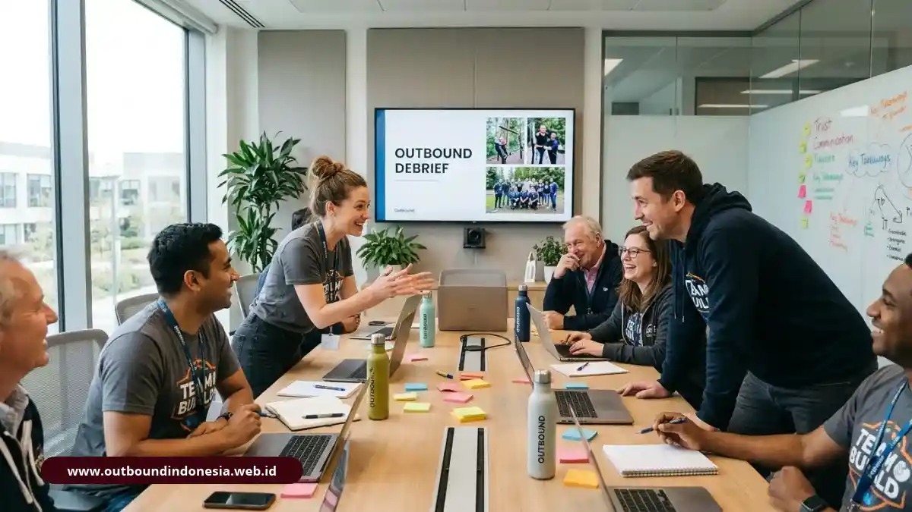

Manfaat outbound training mencakup peningkatan percaya diri dan inisiatif individu, komunikasi dan empati antaranggota, serta kerja tim yang lebih efisien. Dampak pada perilaku umumnya terlihat stabil sekitar dua sampai tiga bulan setelah pelatihan, dengan syarat ada refleksi dan tindak lanjut di tempat kerja.
Mengapa Outbound Dapat Mengubah Perilaku?
Outbound dapat mengubah perilaku karena pembelajaran terjadi lewat pengalaman nyata dan refleksi, dalam lingkungan yang membuat peserta merasa aman untuk mencoba.
Apa Bedanya dengan Belajar di Kelas Teori?
Belajar di kelas menyampaikan konsep, sedangkan outbound menempatkan peserta pada situasi yang memaksa mereka menerapkan konsep itu secara langsung.
Sebuah kajian yang dirujuk penulis melaporkan retensi pengetahuan pada metode experiential berkisar 75-90 persen, dibanding 10-20 persen pada ceramah kelas. Selisih ini menjelaskan mengapa banyak organisasi memakai outbound untuk keterampilan yang sulit diajarkan lewat slide presentasi, seperti kepemimpinan dan komunikasi.
Apa Itu Psychological Safety dan Mengapa Penting?
Psychological safety adalah rasa aman untuk menyampaikan ide, bertanya, atau mengaku salah tanpa takut dipermalukan atau dihukum rekan kerja maupun atasan.
Dalam outbound, suasana luar ruang dan aturan permainan menurunkan sekat jabatan. Atasan dan bawahan sama-sama tampak kesulitan atau berhasil, sehingga keterbukaan lebih mudah tumbuh secara alami.
Apa Dampak Outbound terhadap Kompetensi Intrapersonal?
Dampak intrapersonal mencakup meningkatnya percaya diri, berpikir kritis, inisiatif, kreativitas, kontrol diri, dan komitmen terhadap organisasi.
Bagaimana Outbound Meningkatkan Percaya Diri dan Keberanian Mengambil Risiko?
Outbound meningkatkan percaya diri karena peserta berhasil menyelesaikan tantangan yang semula dianggap di luar kemampuannya, dalam kondisi risiko yang terkelola dengan baik.
Keberhasilan itu menjadi bukti pribadi, yang jauh lebih meyakinkan daripada sekadar pujian verbal. Peserta lebih bersedia mengambil keputusan terukur setelah kembali bekerja di kantor.
Apakah Outbound Meningkatkan Inisiatif dan Komitmen Organisasi?
Outbound dapat meningkatkan inisiatif dan komitmen, terutama ketika pengalaman kelompok membuat peserta merasa menjadi bagian yang berarti bagi tim.
Dalam studi pada program eksekutif yang dirujuk penulis, sebanyak 84 persen peserta melaporkan dedikasi dan komitmen yang meningkat setelah mengikuti pelatihan adventure outbound.
Apa Dampak Outbound terhadap Kompetensi Interpersonal dan Kerja Sama Tim?
Dampak interpersonal mencakup kemampuan memimpin, empati antaranggota, pengelolaan konflik, serta kecakapan mengarahkan dan mengorganisasi kelompok.

Tim kantor berdiskusi bersama secara harmonis setelah mengikuti program outbound dan sesi debriefingPerilaku Komunikasi Apa yang Membaik Setelah Outbound?
Lima perilaku komunikasi yang menunjukkan peningkatan signifikan mencakup mendengarkan secara aktif, memberikan umpan balik yang transparan, menginterpretasikan isyarat nonverbal, mengatasi permasalahan dengan efisien, serta memperkuat fondasi kepercayaan.
- Mendengarkan aktif: peserta terbiasa menyimak instruksi sampai tuntas sebelum bertindak.
- Memberi masukan jelas dan langsung: sesi debriefing melatih kritik konstruktif tanpa rasa canggung atau defensif.
- Membaca bahasa tubuh: kepekaan terhadap kondisi emosi dan tingkat stres rekan meningkat.
- Menyelesaikan masalah secara cepat: tim terbiasa mencari solusi bersama di bawah tekanan waktu.
- Membangun kepercayaan: keterbukaan tumbuh dan hambatan hierarki melonggar.
Bagaimana Outbound Mengurangi Silo Mentality?
Outbound mengurangi silo mentality dengan mencampur anggota dari departemen berbeda dalam satu tim, sehingga mereka bergantung satu sama lain untuk menyelesaikan tantangan bersama.
Pengalaman bersama di alam terbuka menciptakan hubungan personal yang erat, yang kemudian mempermudah koordinasi dan menghilangkan ego sektoral lintas bagian.
Bisakah Outbound Menemukan Potensi Kepemimpinan Tersembunyi?
Outbound dapat menemukan potensi kepemimpinan tersembunyi karena tantangan kelompok membuat pemimpin alami muncul tanpa bergantung pada jabatan formal.
Peserta yang biasanya pendiam di ruang rapat dapat tampil sebagai pengatur strategi yang tenang saat tantangan berlangsung. Pengamatan ini sangat berguna bagi manajemen dalam pemetaan talenta (talent management).
Bagaimana Dampak Outbound terhadap Kinerja Bisnis dan ROI?
Dampak terhadap kinerja bisnis terlihat pada produktivitas, kecepatan adaptasi karyawan baru, dan stabilitas tim, walaupun angka pastinya berbeda pada tiap organisasi.
Seberapa Besar Peningkatan Produktivitas yang Dilaporkan?
Kajian yang dirujuk penulis melaporkan efisiensi kinerja naik hingga kisaran 30 persen pada tim yang dilatih dengan outbound, serta pendapatan per karyawan hingga 218 persen lebih tinggi pada perusahaan dengan program experiential terstruktur.
Angka tersebut perlu dibaca sebagai gambaran kecenderungan. Hasil tiap organisasi dipengaruhi kualitas program, dukungan manajemen puncak, dan kondisi pasar.
Apa Contoh Studi Kasus Industri?
Tiga studi kasus yang dikutip oleh penulis memperlihatkan peningkatan signifikan dalam hal penyelesaian proyek, proses onboarding, dan kinerja penjualan setelah pelaksanaan program outbound:
- Apollo Healthcare: program outbound mengikis silo mentality antara bagian medis dan administratif, menghasilkan penurunan 30 persen keterlambatan proyek operasional.
- Startup teknologi: onboarding karyawan baru berlangsung hingga 40 persen lebih cepat dan angka retensi talenta muda meningkat tajam.
- Tim penjualan (sales team): performa penjualan individu naik sekitar 25 persen berkat ketahanan mental dan keterampilan komunikasi persuasif yang lebih baik.
Apakah Outbound Dapat Menekan Turnover Karyawan?
Outbound berpotensi menekan angka turnover karena keterikatan pada tim dan komitmen terhadap organisasi meningkat. Mengingat kehilangan karyawan menimbulkan biaya rekrutmen dan pelatihan ulang yang tinggi, retensi yang lebih baik memberikan dampak ROI finansial langsung.
Namun, hubungan ini tidak otomatis. Outbound tidak akan menggantikan perbaikan sistem kompensasi atau perbaikan beban kerja bila hal tersebut merupakan akar masalah turnover.
Kapan Dampak Outbound Dapat Dievaluasi?
Dampak outbound dapat dievaluasi secara objektif sekitar dua sampai tiga bulan setelah pelatihan, ketika euforia kegiatan telah mereda dan perubahan perilaku mulai stabil dalam ritme kerja nyata.
Sebaiknya tentukan indikator sebelum program, misalnya metrik keterlambatan proyek, hasil survei kepuasan kerja sama tim, atau waktu penyelesaian tugas lintas bagian. Bandingkan kondisi sebelum dan sesudah dengan catatan bahwa faktor lingkungan kerja lain juga perlu diperhatikan.
Bagaimana Implikasi bagi Investasi SDM dan Pendidikan?
Implikasinya, outbound lebih layak diperlakukan sebagai investasi pengembangan perilaku yang membutuhkan desain matang, fasilitasi refleksi, dan tindak lanjut terukur, bukan sekadar acara piknik atau tamasya tahunan kantor.
Organisasi yang menginginkan hasil nyata perlu menghubungkan desain aktivitas dengan masalah spesifik yang telah dipetakan lewat analisis kebutuhan pelatihan (TNA).
Bagi institusi sekolah dan lembaga pendidikan, prinsip serupa berlaku untuk pembentukan karakter mandiri, resiliensi, dan kebiasaan gotong royong para siswa.
Untuk memahami kerangka komprehensif mulai dari konsep hingga estimasi anggaran, simak panduan utama outbound training kami.
Kesimpulan Praktis
Manfaat outbound training paling nyata dirasakan bila program dirancang dari kebutuhan riil tim, dijalankan secara aman, dan diikuti evaluasi sistematis.
- Gunakan outbound untuk melatih keterampilan perilaku yang sulit diajarkan lewat presentasi teori di kelas.
- Bangun psychological safety agar peserta berani membuka sekat diri dan saling menerima masukan.
- Tetapkan indikator evaluasi sebelum kegiatan dimulai dan ukur kembali 2 hingga 3 bulan pasca-program.
- Pahami angka riset sebagai gambaran arah dan potensi, bukan jaminan instan tanpa komitmen tim.
- Hubungkan seluruh hasil refleksi pelatihan dengan rencana aksi konkret di tempat kerja.

Tim Outbound Indonesia
Tim fasilitator berpengalaman dan praktisi experiential learning profesional. Berdedikasi membagikan wawasan keselamatan, dinamika tim, dan pengembangan kepemimpinan di alam bebas.